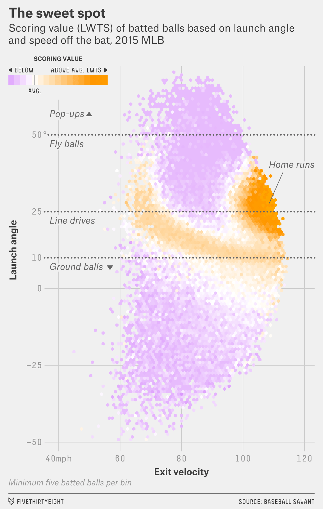
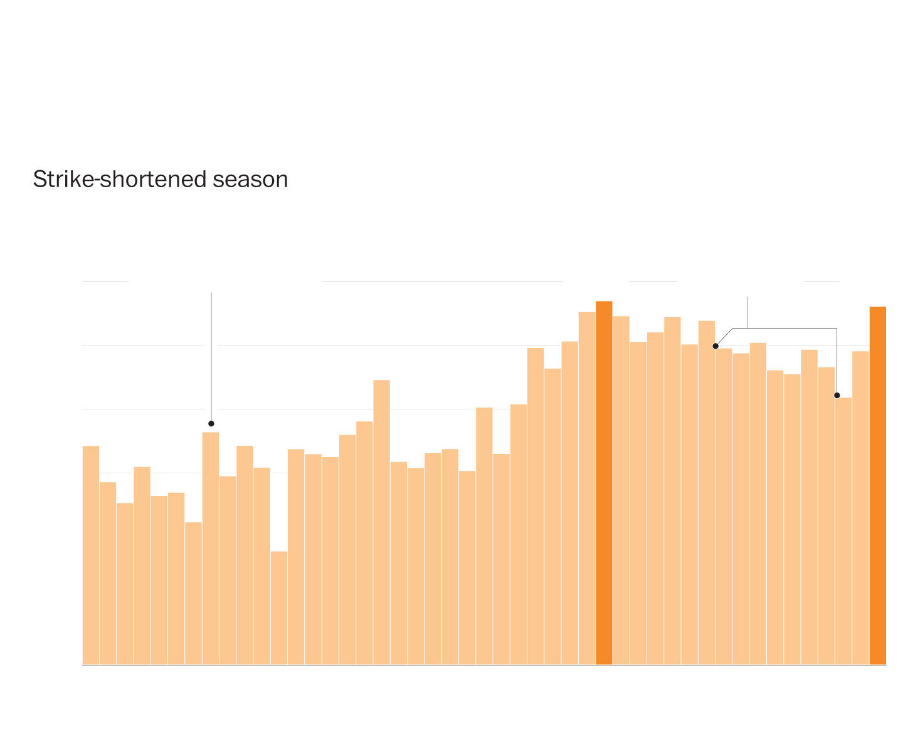
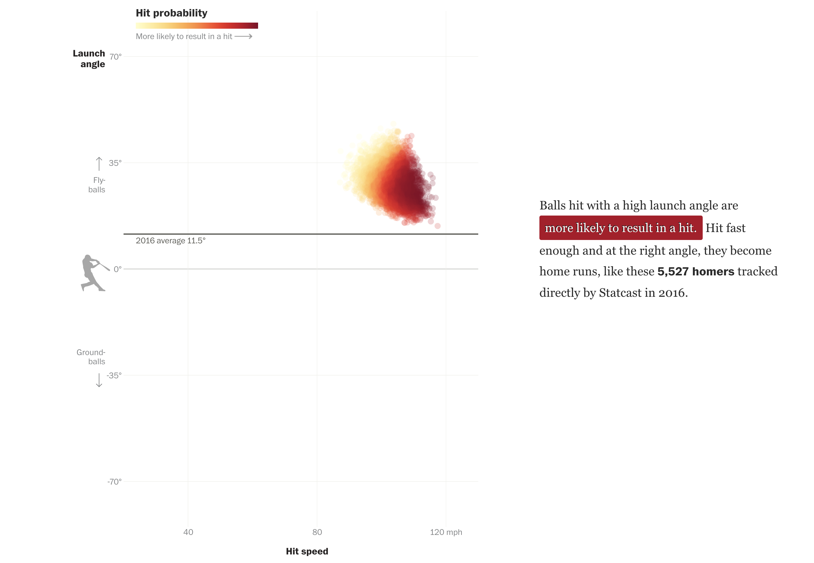
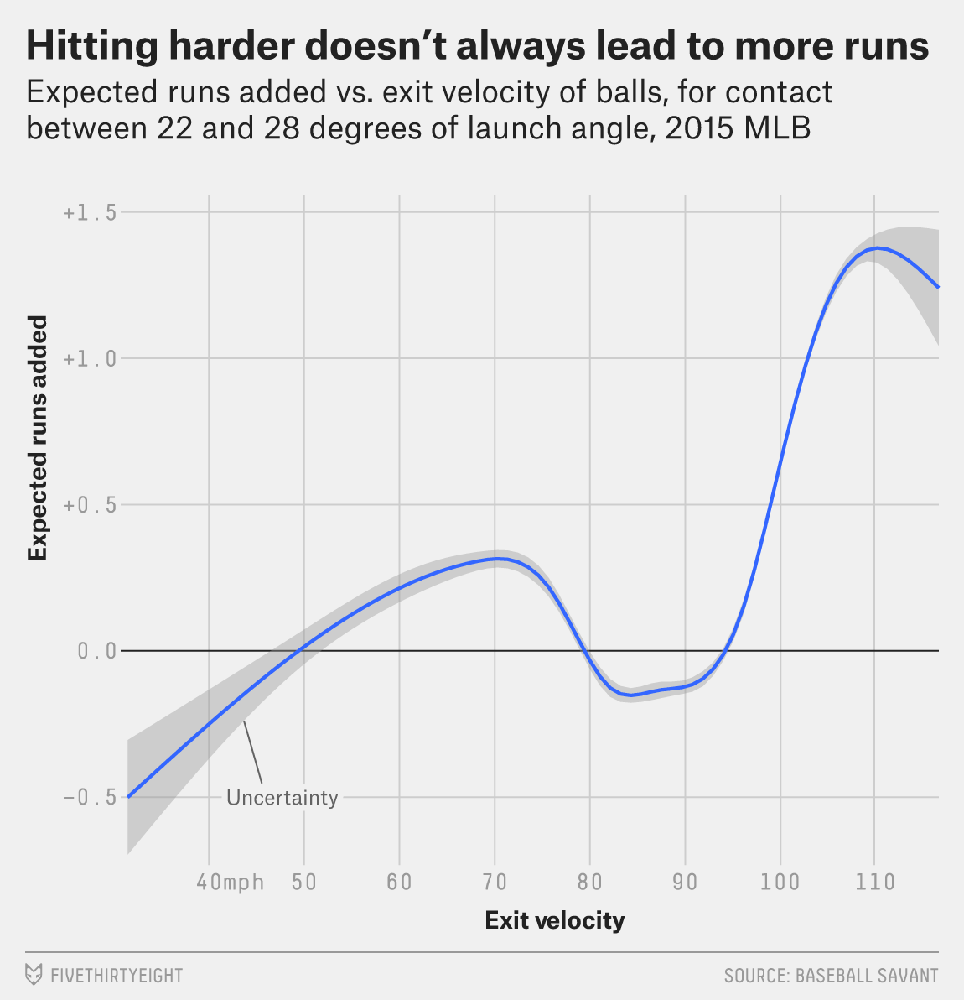

What is baseball analytics?
Sabermetrics or baseball analytics is the practice of applying statistical methods to come up with insights on the game
of baseball, which might help players at improving their game. Possibly the greatest implementation of this is Statcast,
a high speed and high accuracy, automated tool developed to analyze player movements and athletic abilities.
It is a network of optical cameras that track vital statistics such as exit velocity and launch angles to gain useful
insights.
So, if ever in broadcast booths, on scoreboards and on Twitter, you see a wave of new information sweeping across Major League
Baseball which tells us that Carter Capps's leaping delivery increases his effective velocity and that Giancarlo Stanton
hits the ball really hard, those numbers are all courtesy of MLB's Statcast system - which uses an array of radar equipment
and high-resolution cameras to track every object and person on the baseball field.
Check out the video to see the shiny tech in action!
Why use Statcast?
Each MLB organization now has an analytics team that uses Statcast data to gain a competitive advantage and Stacast has replaced traditional metrics and coaching methodologies. It can also be used to prevent injuries during the season by tracking physical performance metrics. For more information check out this excellent Wiki page.Statcast has truly changed MLB. Apat from teams incorporating the Statcast numbers into fancy simulations to evaluate prospective acquisitions, fans and writers are dissecting elements of the same data to judge those acquisitions while broadcasters are talking their way through replays and overlays sprinkled with Statcast graphics.
In the following section we discuss how baseball players have suddenly become obsessed with launch angles and exit velocity.
A tale of angles and velocities
Launch angle measures the vertical direction of the ball coming off the bat; a launch angle of zero degrees would
be a flat line, with positive numbers indicating an upward ball flight and negative ones indicating a ball driven
into the ground. Hitters with high launch angles tend to be sluggers who produce lots of fly balls (and, sometimes, pop-ups).
Kris Bryant was one of the league leaders in launch angle in 2015, with an average angle of 19.2 degrees.
Conversely, low launch angles tend to be the domain of quick, slap-hitting middle infielders who generate lots of ground
balls. Dee Gordon, for example, was toward the low end of the spectrum with an average launch angle of 2.9 degrees.
Exit velocity, on the other hand, represents the speed at which a ball leaves the bat. Although it was unofficially
available from some websites last year, MLB officially packaged and released exit velocity alongside launch angle on April 7,
effectively giving us a detailed measure of how hard each ball was hit. Unsurprisingly, at the top of last season's exit
velocity leaderboards you'll find the game's greatest sluggers - such as Stanton (99.1 mph), Miguel Cabrera (95.1)
and Jose Bautista (94.3) - pounding out average exit velocities well north of 90 miles per hour.
We learned last season that exit velocity alone was modestly useful, but it becomes exponentially more powerful when
combined with launch angle data. These two numbers together can tell us a great deal about what's likely to happen after
bat meets ball.
Launch Angle v/s Exit-Velocity Infographic
The article throws up an interesting point. The number of home runs hit ever since the introduction of Statcast has gone up significantly. Statcast's data confirms this, where the number went up by 1400 in just two seasons from 2014 to 2016. Analysts have been an able to pinpoint that a range of 25-35 degrees launch angle when coupled with an exit velocity of 95mph or greater has been known to be most effective. Players seem to have taken note of the data provided by Statcast which has led to the rise of the fly-ball trend. The average launch angle in MLB has been rising by an average of 12% every year, from 10.5 degrees in 2015 to 12.8 degrees in 2017.
Effect and Influence
 
The vertical bars in orange represent the all-time high number of homeruns scored in baseball. The first bar represent the year 2000 where major changes in baseball rules where introduced while the second highlights the year 2016, a year after Statcast was introduced.
There's evidence of the same, where Daniel Murphy in his last season with the Mets had a flyball rate of 36% and a
groundball rate of 42.8% but essentially changed his groundball-flyball ratio to 36.3 and 41.9, respectively.
This led to him batting with 25 homers, 104 RBI and finishing runner-up in MVP voting. The reason behind the change is evident
from his average launch angle that went from 11.1 degrees in 2015 to 16.6 degrees in 2016. Daniel's teammate Anthony Rendon
seems to have followed a similar approach where his launch angle went from 10.6 degrees to 16.8 degrees. It seems like,
every batter in baseball today, is now obsessed with finding the right angle and trying to hit the ball higher.
Below is a table showing statcast data about top 25 batters. Statistics like these have noe hit mainstream and are now a
common feature of websites like Baseball Savant .

Why both Statistics are not independent of each other?

Just banking on one statistic, without accounting for the other can be disastrous as shown by the infographic below:
The success of a ball struck at a more intermediate angle varies and depends a lot on it's exit velocity. At any particular
launch angle, the number of runs added varies. Low-exit velocities may result in short-hoppers to the infielders, an easy out.
As batters hit the balls harder, the expected runs line rises sharply and eventually the balls start sailing over the heads
of infielders for singles. Surprisingly, we see a drop in between, as the hits now travel to the outfielders and after a
certain point the expected run added rate increases exponentially as balls hit at an exit-velocity more than 95mph become
doubles and eventually home runs.
The table below is a representation of the Statcast Leaderboard sourced from mlb.com
| Batter Name | Distance (feet) | Exit Velocity (mph) | Launch Angle (deg) |
|---|---|---|---|
| Wilson Contreras | 491 | 110.6 | 26.5 |
| George Springer | 448 | 111.9 | 26.7 |
| Chris Taylor | 447 | 106.7 | 31.6 |
| Chris Taylor | 444 | 106.4 | 27.4 |
Chris Taylor, LA Dodgers batter features twice on MLB's list. The table above shows how a difference in 4.2 degrees launch angle made his hit cover a distance of 3 feet more than on the previous hit.
The influence of peers
The early success found by Washington Nationals' Daniel Murphy translated into other teammates like Anthony Rendon following suit. It's not surprising that word of mouth publicity holds such influence as some of the players have been known to trust their teammates whenever taking a potential career changing decision. Player's often build trust around each other which might not be the case if a manager is hurling random numbers in a bid to improve their game.
However encouraging all players to change their launch angles can be a disastrous idea. The idea of advocating statistics and numbers to help improve the player's game is commendable. However, it might often be too confusing to some players and might lead them to think more on the pitch. It is more about getting the players to understand their best swing paths individually. If influenced by their peers, a smaller, less powerful guy might be tempted to increase his launch angle. However, he would be missing out on the role played by exit velocity. That's where we must proceed with caution.
You can read more about the influence of peers in this excellent article written at fangraphs.com here.In the end, it is all about using statistics in a bid to improve player's performance wisely. Data from tools like Statcast, when implemented properly can lead the players and their teams to grow significantly, but, it is not a one-size fits all solution.
Shortcomings
Statcast definitely has its flaws.Last August, CBS Sports' Rob Arthur uncovered Statcast's difficulty with tracking batted balls that had "atypical trajectories," a group comprising more than 10 percent of all balls put into play. Perhaps another equally concerning controversy surfaced this April when a league-wide velocity bump was revealed to be a byproduct of MLB changing its measurement preferences from PITCHf/x to Statcast without notice. There's also the matter of ballpark bias as it relates to exit-velocity recordings. Still, MLBAM remains optimistic.
MLB.com's Mike Petriello who joined MLB.com after years at his own Los Angeles Dodgers site says he's familiar with the baseball analytics community, and presumably with its desire for a scientific approach to all things. Trust is earned through independent replication and verification, nothing else -- even God has to provide p-values. Predictably, neither Statcast's inaccuracies nor its near-black-box ensconcing have been embraced. Though the unwieldiness of the data (a single game produces more raw data than the Library of Congress adds to its web archive data every month) would make it difficult for most public-facing analysts to manage, everyone wants the opportunity to look for themselves.
References
This project wouldn't have been possible without browsing through the following websites:1) https://fivethirtyeight.com/features/the-new-science-of-hitting/
2) https://en.wikipedia.org/wiki/Statcast
3) https://www.cbssports.com/mlb/news/how-statcast-has-changed-mlb-and-why-not-everybody-seems-all-that-happy-about-it/
Assignment Reflections
This assignment was helpful in learning HTML, CSS, UI Design principles and little bit of JavaScript.
Below are the components that played part in bringing together this website -
- Responsiveness
- Usability
- Content
- Design
i) Used relative sizes for images (width: 50% instead of 500px to prevent overflowing of content). Referenced from this link.
ii) Used background colour instead of using image as a background so that it works well on mobile and tablets. Referenced from this link.
iii) Optimize text for reading. Referenced from this link.
The GitHub link for the assignment code and files can be found here.
Assignment Contributers (Group 17):
- Ankit Singh
- Harish Yadav
- Nipun Soni